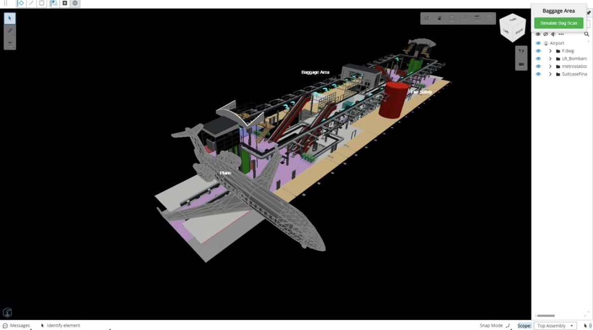
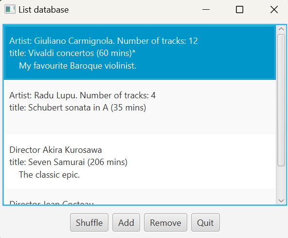
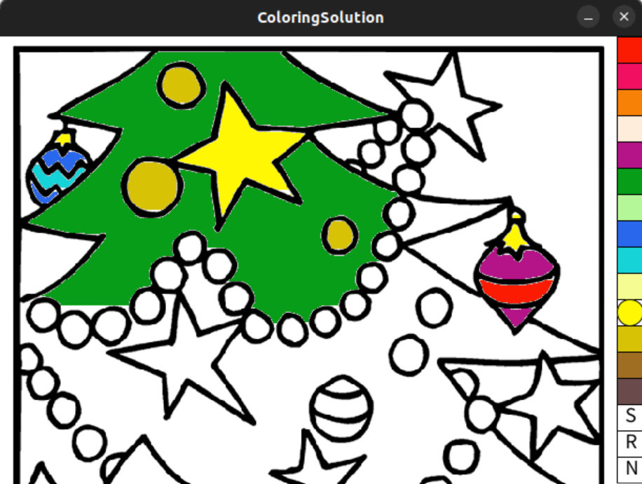
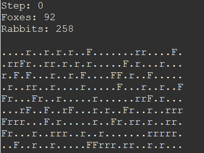

Project 1: Real-Time Passenger Flow Monitoring System
RTPFM, an AI-powered system for monitoring passenger flow in real time, is designed to detect crowd patterns and immediately identify bottlenecks. The system sends alerts via mobile devices and emails when potential issues arise, helping to optimize operations and improve safety in public spaces, particularly in high-traffic areas like airports. By leveraging AI and digital twin technology, the solution addresses the essential need for effective crowd management.
Project 2: Christmas Colouring Book
This project implements a colouring book application using processing. The application will load black and white Christmas line drawings onto the Processing canvas, allowing users to interactively color the images. The functionality includes clicking on a white pixel to initiate a gradual coloring process for the adjacent white pixels within that area. Buttons are provided to allow the users to select desired colours. Moreover, the application incorporates features for resetting the artwork, providing users with the flexibility to start anew whenever they wish. Additionally, the option to save colored pictures adds a practical element, allowing users to preserve their artistic creations and share them with others.
Project 3: Foxes and Rabbits Simulation
The project involves creating a grid-based natural environment simulator where Rabbits and Foxes interact over a set number of simulation steps. Each grid cell in the field can house these animals, with Rabbits moving randomly and Foxes attempting to hunt adjacent Rabbits or moving randomly. Animals age, breed with a given probability, and eventually die. The initial state populates the field with Rabbits and Foxes based on specified probabilities. After each simulation step, the program visualizes the evolving ecosystem, displaying the count of each animal type. The goal is to model a dynamic natural environment, capturing the interplay between the two animal species and their behaviors.
Project 4: Cars and Track Mini-Game
The project is centered around the development of an engaging animated racing game, featuring a group of cars navigating a racetrack and coming to a halt upon reaching the finish line. Users have the interactive capability to press the 's' key, triggering the reset of the cars to the starting point and initiating the animation once again. A sophisticated scoring system has been implemented to keep track of the cumulative number of victories achieved by the cars throughout the gameplay. The score is dynamically updated and prominently displayed in the center of the car's chassis upon securing a win.